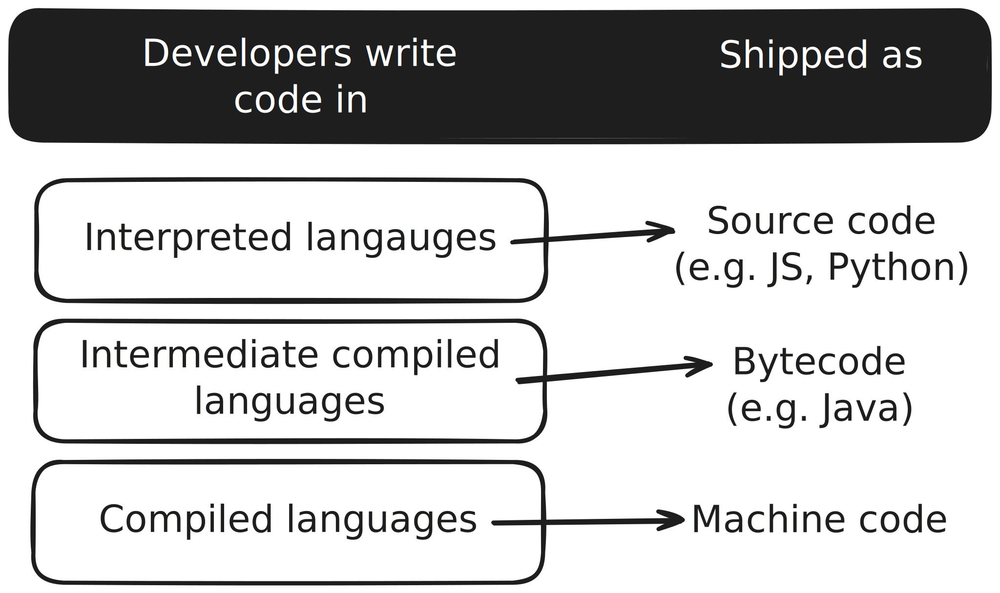
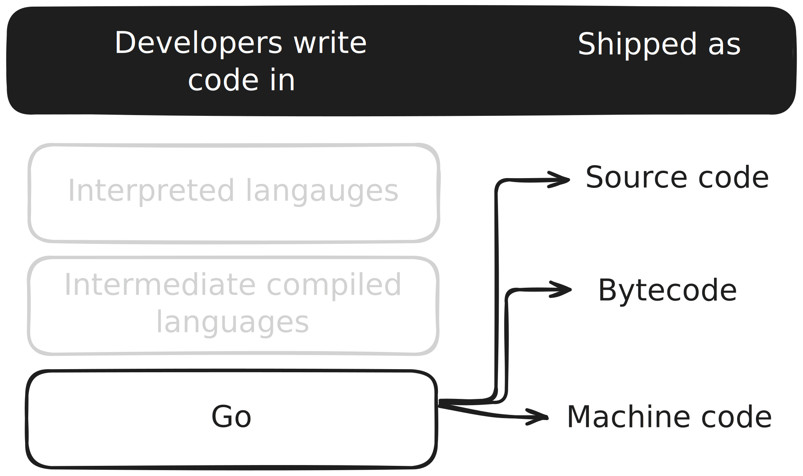

Go basics
In this lesson, we will cover the fundamentals of the Go programming language.
- Syntax rules; use of curly braces, case-sensitivity, comments
- Modules
- Variables, types and constants
- Data types
- Visibility
- Collections
- Numbers
- Functions
- Pointers and references
- Control structures
- panic, defer
- Error handling design pattern
- Packages to organize, share and use code
As a practical exercise (well, many exercises) along the way, we are going to build a command line tool that can compress and decompress bitmap images.
Language types


Basic rules
- We use
.gofiles - Code blocks in
{} - No styling freedom
- We do have semi-colon to separate sentences
- They are optional though
- Case-senstive
- Strongly typed
- NOT an object-oriented language
- No classes, no inheritance
- No exceptions, no try-catch
- We have one file acting as the entry point with a main function
- A folder is a package
- Packages can have simple names (utilities) or URLs (github.com/username/project)
- Within one
.gofile, we can have:- Variables
- Functions
- Type declarations
- Method declarations
Modules
- A module is a group of packages
- You can think of it as a project
- Modules contain a
go.modfile that contains the module name, configuration and metadata (about dependencies)
Note: While having a module for a directory is not mandatory for Go code to run, modules is a way to organize your code and dependencies into chunks much like a small project. By creating the
go.modfile, you are creating a module. The real power of modules comes into light when you start to use dependencies as a module helps you manage them.
CLI
It manipulates the module
go mod init-> initializes the modulego build-> builds the modulego test-> tests the modulego run-> builds and runs the modulego get-> retrieves dependencies
Creating a module
- Create a new folder (e.g.
gointro) - Run
go mod init <module-name>
You will get a go.mod file with the module name and Go version the code is to be compiled in.
Very simple.
go.mod example:
module itu.com/bds/gointro
go 1.23
Running the module
go run .
If you are coming from JavaScript, the go.mod file is similar to the package.json file.
Similarly, if you are coming from Python, the go.mod file is similar to the requirements.txt. Or pyproject.toml file when using Poetry.
Workspaces
Kind of a "super module" that can be used to organize projects into multiple modules.
- Introduced in Go 1.18
It contains a go.work file that contains configuration and metadata—including which module to use.
The Go CLI manipulates the workspace.
Creating a workspace
- Create a new folder
go work init <modules-directory>
The go work init command tells go to create a go.work file for a workspace containing the modules in the <modules-directory> directory.
For more details: https://go.dev/doc/tutorial/workspaces
go.work example:
go 1.23
use ./gointro
But really, modules and packages are all you are going to need.